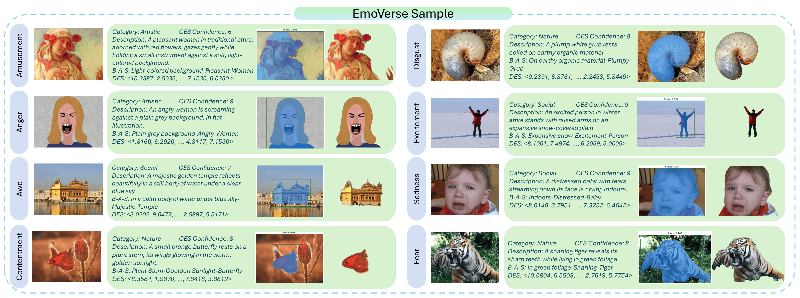
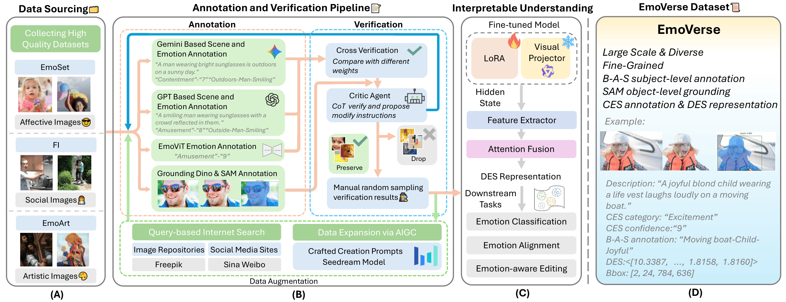

✨ Interpretable Visual Emotion Analysis
EmoVerse
A MLLMs-driven emotion representation dataset that connects categorical emotion, continuous affective space, textual attribution, and grounded visual evidence.

📚 Dataset
Designed for emotion reasoning, not only emotion labels.
🧩 Schema
Each sample records what is felt, why it is felt, and where the evidence appears.
{
"emotion": "Amusement",
"confidence": 8,
"background": "snow-covered plain",
"attribute": "excited",
"subject": "person",
"B-A-S": "snow-covered plain-excited-person",
"DES": [10.3387, 2.5036, "..."],
"bbox": [{"x1": 47, "y1": 10, "x2": 421, "y2": 559}]
}🛠️ Pipeline
A scalable annotation workflow with verification built in.
- 01 🌈 Collect and generate affective images
- 02 ✍️ Annotate background, attribute, subject, and emotion
- 03 🔍 Cross-check with emotion-specific models
- 04 📍 Ground subjects with boxes and masks
- 05 ✅ Verify with Critic Agent and manual sampling

🔖 Citation
Use EmoVerse in your work.
@misc{guo2025emoverse,
title = {EmoVerse: A MLLMs-Driven Emotion Representation Dataset for Interpretable Visual Emotion Analysis},
author = {Yijie Guo and Dexiang Hong and Weidong Chen and Zihan She and Cheng Ye and Xiaojun Chang and Zhendong Mao},
year = {2025},
eprint = {2511.12554},
archivePrefix = {arXiv},
primaryClass = {cs.CV},
doi = {10.48550/arXiv.2511.12554},
url = {https://arxiv.org/abs/2511.12554}
}